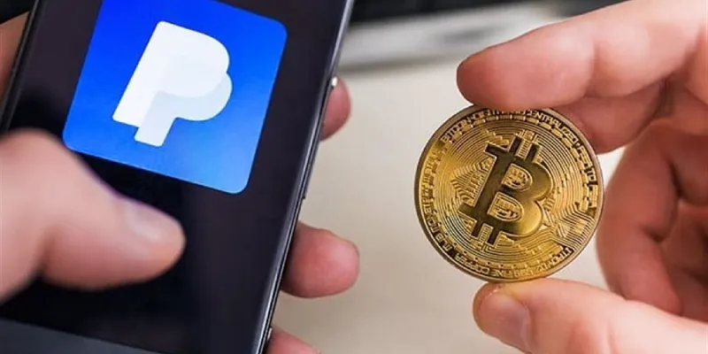

The move comes after nearly two years since PayPal enabled users to buy and sell crypto on its platform.

After rolling out the ability to buy and sell crypto on its platform in October 2020, PayPal is finally allowing users the ability to natively transfer, send and receive digital assets between PayPal and other wallets and exchanges. As of Tuesday, the feature is available to select U.S. users, with the feature expanding to all eligible U.S. users in the coming weeks. The first batch of supported coins consists of Bitcoin BTC $16,704, Ether ETH $1,217, Bitcoin Cash BCH $100, and Litecoin LTC $74.58.
Users would simply need to log in to their accounts and enter the crypto section of the application to start transferring coins. Users are generally required to complete a one-time ID verification before the procedure.In addition, customers who transfer their crypto onto PayPal can spend it via Checkout at millions of merchant terminals. The company has been granted a full Bitlicense by the New York Department of Financial Services for the conduct.
Crypto transfers to recipients outside of PayPal would incur a network fee based on their respective blockchains, but transfers between PayPal users will not incur such fees. To protect users' privacy, the firm generates a new recipient address for each transaction into one's PayPal account. PayPal will also not charge fees for incoming transfers.
The company is also working to integrate other forms of cryptocurrency services, such as central bank digital currencies, to boost its digital footprint. It is also exploring the possibility of launching its own stablecoin, dubbed "PayPal Coin." The discovery came after a developer found evidence of such a stablecoin within the source code of the company's iPhone app.